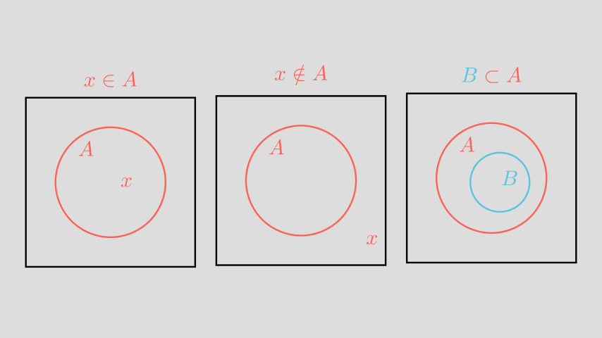
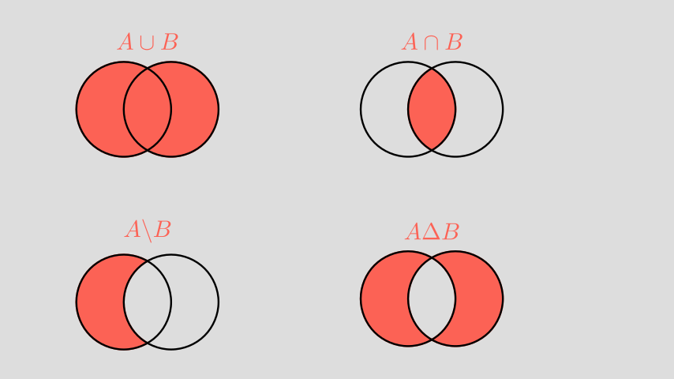
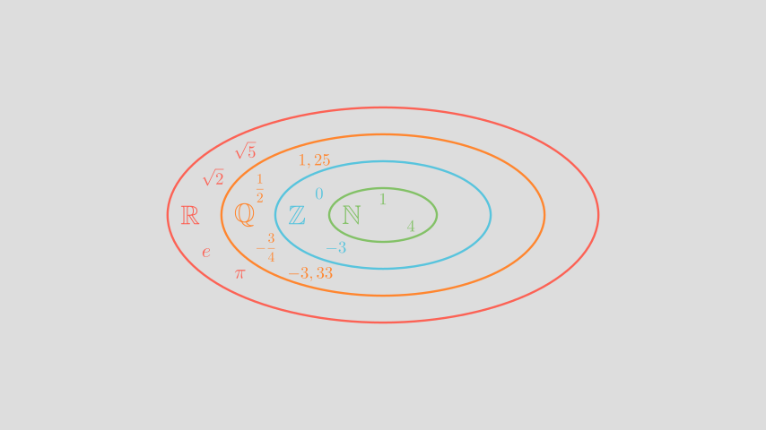
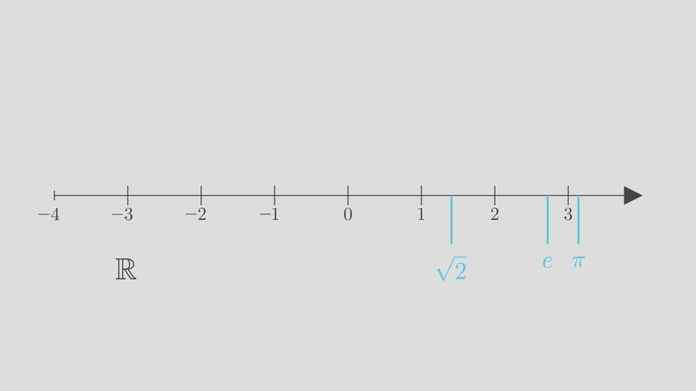

- 1
-
Definition eines
setA mit Mengenklammern - 2
-
Definition eines leeren
setB - 3
-
Die Anzahl der Elemente eines
set(auch die Kardinalität einer Menge genannt) wird mit der Funktionlen()berechnet. Wir haben hier auf der linken und rechten Seite des==jeweils zwei Werte zu einem sogenanntentuplezusammengeführt, einem anderen Datentyp, bei dem die Elemente in runden Klammern angegeben werden. Auch eintuplekann offensichtlich auf Gleichheit getestet werden.
Zahlenbereiche und Zahlensysteme
Bisher haben wir wie selbstverständlich von natürlichen und reellen Zahlen gesprochen, ohne überhaupt genau zu wissen, was wir darunter verstehen wollen.
In dieser Lektion werden wir uns den Zahlenbegriff, so wie er der gesamten Mathematik zugrunde liegt, näher anschauen. Dafür werden wir zunächst die Grundbegriffe der Mengenlehre kennenlernen und die Zahlen in Zahlenbereiche einteilen. Schließlich wollen wir auch noch verschiedene Zahlensysteme erkunden.
1 Elementare Mengenlehre
In der Mathematik wird jede Zusammenfassung von bestimmten, wohlunterscheidbaren Objekten zu einer Gesamtheit eine Menge genannt. Eine Menge ist definiert, wenn feststeht, welche Objekte zu dieser Menge gehören und welche nicht. Die zur Menge gehörenden Objekte heißen ihre Elemente. Mengen werden meistens mit großen lateinischen Buchstaben bezeichnet und die Elemente mit kleinen Buchstaben.
Definition von Mengen
Es gibt zwei Möglichkeiten, Mengen zu definieren:
- Durch Aufzählen ihrer Elemente, die in beliebiger Reihenfolge zwischen geschweiften Klammern (Mengenklammern) gesetzt sind und durch Komma getrennt werden: \(\{x_1, x_2, x_3, \dots\}\)
- Durch Angabe einer die Elemente charakteresierenden Eigenschaft: \(\{x \mid \mathrm{Eigenschaft}\}\). Der vertikale Strich \(\mid\) wird gelesen als “für die gilt”.
Beispiele für Mengendefinitionen
- \(A=\{1,2,3\}\): die Menge \(A\) besteht aus den Elementen 1, 2 und 3.
- \(B=\{x \mid x^2-1=0\}\): die Menge \(B\) besteht aus den Elementen \(x\), für die \(x^2-1=0\) gilt.
- \(B=\{1,-1\}\): da die Gleichung \(x^2-1=0\) die Lösungen \(x_1= 1\) und \(x_2=-1\) besitzt, kann man die Menge \(B\) auch in dieser Form schreiben.
Gehört ein Objekt \(a\) einer Menge \(M\) an, so schreibt man \(a \in M\) (gelesen als: \(a\) ist Element von \(M\)). Gehört \(a\) nicht zu \(M\), so schreibt man \(a \notin M\).
Wenn jedes Element einer Menge \(M\) auch Element einer Menge \(N\) ist, so nennt man \(M\) Teilmenge von \(N\) und schreibt \(M \subset N\). Diese Schreibweise bedeutet auch, dass \(M\) eine echte Teilmenge von \(N\) ist; es gilt also \(M\neq N\). Wollte man zulassen, dass \(M\) auch gleich \(N\) sein könnte, also \(M=N\), dann würde man \(M\subseteq N\) schreiben.
Die leere Menge \(\emptyset=\{\}\) enthält kein Element.
Die Zugehörigkeit von Objekten zu Mengen kann man auch grafisch in einem Mengendiagramm darstellen, wobei Mengen als Kreise oder Ellipsen dargestellt werden, und Elemente, die zur Menge gehören, in den Kreis geschrieben werden.

Auf Mengen sind folgende Operationen definiert, deren Ergebnis jeweils wieder eine Menge ist:
Vereinigungsmenge
Die Vereinigung \(A \cup B\) zweier Mengen \(A\) und \(B\) besteht aus denjenigen Elementen, die in \(A\) oder in \(B\), also in mindestens einer der beiden Mengen \(A, B\) enthalten sind: \[ A \cup B = \{x \mid x \in A \ \mathrm{oder} \ x \in B\} \]
Schnittmenge
Die Durchschnitt \(A\cap B\) zweier Mengen \(A\) und \(B\) besteht aus denjenigen Elementen, die sowohl in \(A\) als auch in \(B\), also gleichzeitig in beiden Mengen \(A, B\) enthalten sind: \[ A \cap B = \{x \mid x \in A \ \mathrm{und} \ x \in B\} \]
Differenz
Die Differenz \(A \backslash B\) zweier Mengen \(A\) und \(B\) besteht aus denjenigen Elementen, die in \(A\), aber nicht in \(B\) enthalten sind: \[ A \backslash B = \{x \mid x \in A \ \mathrm{und} \ x \notin B\} \]
Symmetrische Differenz
Die symmetrische Differenz \(A \Delta B\) zweier Mengen \(A\) und \(B\) besteht aus denjenigen Elementen, die in \(A\) oder \(B\) enthalten sind, aber nicht in der Schnittmenge von \(A\) und \(B\): \[ A \Delta B = (A \cup B) \backslash (A \cap B)=(A \backslash B) \cup (B \backslash A) \]
Diese Mengenoperationen können mit einem sogenannten Venn-Diagramm veranschaulicht werden, in dem die Ergebnismenge einer Operation entsprechend eingefärbt wird (in diesem Beispiel in Rot):

Wir können auch in Python mit Mengen rechnen (wir beschränken uns dabei auf ganze Zahlen). Dazu müssen wir die Zahlen, die zu einer Menge gehören sollen, in einem Datentyp set zusammenfassen, der weitgehend unserem Mengenbegriff entpricht. Da alle Schlüsselwörter in Python (und damit auch die Bezeichnungen der Datentypen) in englischer Sprache angegeben werden, verwenden wir in diesem Tutorial ausschließlich die englischen Bezeichnungen.
Der Test auf Mitgliedschaft in einer Menge (\(\in\)) wird mit dem Schlüsselwort in durchgeführt, das Gegenstück (\(\notin\)) mit not in, wobei not ein sogenannter Bool’scher Operator ist, der das gegebene Argument verneint:
assert 1 in A
assert 1 not in BDie beiden anderen Bool’schen Operatoren in Python sind and und or mit denen wir zwei Wahrheitsaussagen verknüpfen können:
- 1
-
Wenn (mindestens) eine der beiden Aussagen wahr ist, dann ist auch die mit
orverknüpfte Aussage wahr. - 2
-
Wir fügen dem
setB das Element 1 hinzu. - 3
-
Nur wenn beide Aussagen wahr sind, dann ist auch die mit
andverknüpfte Aussage wahr.
Ob ein set B eine echte Teilmenge vom set A ist (\(B\subset A\)), kann mit dem Operator B < A getstet werden. Das ist dann gleichbedeutend mit A > B, d.h. A ist die Obermenge von B:
assert B < A
assert A > BUnd schließlich können wir auch die Mengenoperationen auf set A und B ausführen:
B.add(-1)
print("A = ", A)
print("B = ", B)
# Vereinigungsmenge A ∪ B
print("A ∪ B = ", A.union(B))
assert A.union(B) == A | B
# Schnittmenge A ∩ B
print("A ∩ B = ", A.intersection(B))
assert A.intersection(B) == A & B
# Differenz A \ B
print("A \\ B = ", A.difference(B))
assert A.difference(B) == A - B
# Symmetrische Differenz A ∆ B
print("A ∆ B = ", A.symmetric_difference(B))
assert A.symmetric_difference(B) == A ^ BA = {1, 2, 3}
B = {1, -1}
A ∪ B = {1, 2, 3, -1}
A ∩ B = {1}
A \ B = {2, 3}
A ∆ B = {2, 3, -1}2 Zahlenbereiche
Die Zahlen, mit denen wir rechnen, lassen sich in Teilmengen einteilen, die Zahlenbereiche genannt werden und üblicherweise in Mengenschreibweise dargestellt werden.

2.1 Natürliche Zahlen
Die einfachsten Zahlen sind die, mit denen wir als Kind zählen gelernt haben: die Menge der natürlichen Zahlen. Wir benutzen diese Zahlen, um die Anzahl von Objekten einer Menge zu bestimmen, also zum Zählen.
Natürliche Zahlen
Die Menge der natürlichen Zahlen sind die ganzen positiven Zahlen: \[ \mathbb{N} = \{1,2,3,\dots\}, \] wobei die drei Punkte anzeigen, dass die Folge der Zahlen nach dem gegeben Muster fortgeführt wird.
2.2 Ganze Zahlen
Ganze Zahlen
Die Menge der ganzen Zahlen ist wie folgt definiert: \[ \mathbb{Z}=\{\dots,-3,-2,-1,0,1,2,3,\dots\} \] Das lässt sich dann unter Verwendung von Eigenschaften so schreiben: \[ \mathbb{Z}=\{z \mid abs(z) \in \mathbb{N}\} \cup \{0\}, \] wobei \(abs(z)\) für den absoluten Wert von \(z\) steht, also \(z\) ohne Vorzeichen.
Es hat in Europa bis zum Ende des Mittelalters gedauert, bis sich die Verwendung von 0 als Zahl und die Rechnung mit negativen Zahlen durchgesetzt hat. Das erscheint auf den ersten Blick verwunderlich, da wir heute ganz selbstverständlich mit negativen Zahlen rechnen. Folgender Witz illustriert, was für ein großer intellektueller Schritt das war:
Mathematiker Witz
Stehen ein Theologe, ein Physiker und ein Mathematiker vor einem leeren Raum. Gemeinsam beobachten sie, wie drei Personen den Raum betreten und kurze Zeit fünf Personen wieder herauskommen.
“Ein Wunder!”, ruft der Theologe.
“Muss sich um einen Messfehler handeln”, murmelt der Physiker.
Der Mathematiker entgegnet nur trocken: “Jetzt müssen nur zwei Leute wieder hineingehen, damit der Raum wieder leer ist”.
Mit der Mengenschreibweise können wir jetzt auch etwas komliziertere Mengen darstellen, zum Beispiel:
Gerade und ungerade Zahlen
- Menge der geraden natürlichen Zahlen: \(\{2n \mid n \in \mathbb{N}\}\)
- Menge der ungeraden ganzen Zahlen: \(\{2z-1 \mid z \in \mathbb{Z}\}\)
Solche Zahlenmengen lassen sich auch in Python mit sogenannten set comprehensions erstellen, die eng an die mathematische Schreibweise von Mengen angelehnt sind:
# Menge der geraden natürlichen Zahlen bis 20
N = {1,2,3,4,5,6,7,8,9,10}
{2*n for n in N}{2, 4, 6, 8, 10, 12, 14, 16, 18, 20}Hier haben wir gegenüber der mathematischen Notation lediglich den vertikalen Strich \(\mid\) durch das Schlüsselwort for ersetzt, und die Menge der natürlichen Zahlen, für die die Anweisung gelten soll, zuvor explizit als set definiert.
Natürlich ist es etwas umständlich, die Elemente der Ausgangsmenge konkret aufzuzählen; Python bieter daher eine range() Funktion an, die zwei ganze Zahlen als Argumente akzeptiert und daraus ein Intervall berechnet, das als Ausgangsmenge dienen kann:
# Menge der ungeraden Zahlen im Intervall [-5, 17)
{2*z-1 for z in range(-2, 9)}{-5, -3, -1, 1, 3, 5, 7, 9, 11, 13, 15}Um zu verstehen was hier passiert, müssen wir uns mit der Intervallschreibweise von Zahlenmengen vertraut machen:
Intervalle
Zahlenmengen können mit Hilfe von Intervallen beschrieben werden. Wenn die Intervallgrenzen mit den ganzen Zahlen \(a,b\) angegeben werden, dann besteht ein Intervall aus allen ganzen Zahlen \(x\), die zwischen diesen Grenzen liegen. Für so beschränkte Intervalle gelten folgende Regeln:
- \([a,b]= \{x \mid x \in \mathbb{Z} \ \mathrm{und} \ a \leq x \leq b\}\) (geschlossenes Intervall)
- \((a,b)= \{x \mid x \in \mathbb{Z} \ \mathrm{und} \ a < x < b\}\) (offenes Intervall)
Eckige Klammern \([]\) bedeuten also, dass der jeweilige Begrenzer mit zur Menge gehört, runde Klammern \(()\)dagegen, dass der Begrenzer nicht mehr zur Menge gehört. In Python erzeugt der Aufruf von range(a, b) immer ein halboffenes Intervall in der Form \([a, b)\), so dass also a zur Menge gehört, b aber nicht. Das erklärt, warum im letzten Code-Beispiel das Intervall \([-5, 17)\) angegeben wurde, mit dem Ergebnis \(\{-5,-3,\dots,13,15\}\), da 17 nicht mehr zum Intervall gehört.
Die Angabe der range mit range(-2, 9) ist trotzdem etwas verwirrend, liegt aber daran, dass \(2\cdot -2-1=-5\) und \(2\cdot 8-1=15\) ist (die 9 in der range gehört nicht mehr zum Intervall und Python wählt den nächstkleineren Wert 8).
Um diese Verwirrung auszuschließen, können wir eine set comprehension auch anders definieren, und zwar indem wir die Forderung für ungerade als zusätzliche Bedingung formulieren:
# Menge der ungeraden Zahlen im Intervall [-5, 17)
{z for z in range(-5, 17) if z % 2 != 0}{-5, -3, -1, 1, 3, 5, 7, 9, 11, 13, 15}Hier haben wir den Modulo Operator % verwendet, der den Rest einer ganzzahligen Division ausgibt, um zu testen, ob z eine ungerade Zahl ist.
2.3 Rationale Zahlen
Eine rationale Zahl ist eine Zahl, die als Verhältnis (lateinisch ratio) zweier ganzer Zahlen dargestellt werden kann. Um die Menge aller rationalen Zahlen zu bezeichnen, wird das Zeichen \(\mathbb{Q}\) verwendet (von Quotient). \(\mathbb{Q}\) umfasst alle Zahlen, die sich als Bruch darstellen lassen, der sowohl im Zähler als auch im Nenner ganze Zahlen enthält.
Rationale Zahlen
Die Menge der rationalen Zahlen ist wie folgt definiert: \[ \mathbb{Q}=\left\{\frac{m}{n} \mid m, n \in \mathbb{Z}, n \neq 0\right\} \]
Der Nenner darf dabei nicht Null sein, da die Division durch 0 nicht definiert ist. Wir werden im Rahmen der Lektion Bruchrechnung näher auf das Rechnen mit Brüchen und damit auf das Rechnen mit rationalen Zahlen eingehen.
Jede rationale Zahl kann als endlicher oder unendlich periodischer Dezimalbruch dargestellt werden.
Dezimalbruch
Der Dezimalbruch einer rationalen Zahl ist die Darstellung der rationalen Zahl als Dezimalzahl, aslo als Zahl mit Stellen hinter dem Komma. Bei einem endlichen Dezimalbruch ist die Anzahl der Stellen hinter dem Komma endlich, bei einem periodischen Dezimalbruch wiederholen sich die Stellen nach dem Komma nach einem gewissen Muster (Periode).
Beispiele für Dezimalbrüche
- \(\frac{3}{2}=1,5\)
- \(-\frac{1}{8}=-0,125\)
- \(\frac{4}{3}=1,33333=1,\overline{3}\) (der periodische Teil wird überstrichen)
- \(-\frac{16}{11}=-1,454545=-1,\overline{45}\)
In Python erzeugt der Divisionsoperator / eine Dezimalzahl, die hier allerdings floating point number genannt wird und dem Datentyp float zugeordnet ist. Beachte den point in der englischen Bezeichnung: das deutsche Dezimalkomma wird zum Dezimalpunkt im gesamten englischen Sprachraum: \(1,5 (de)= 1.5(en)\).
print("3/2 =", 3 / 2)
print("-1/8 =", -1 / 8)
print("4/3 =", 4 / 3)
# eine periodische Darstellung ist nicht möglich, aber wir können runden
print("-16/11 =", round(-16/11, 2)) # runden auf 2 Stellen nach dem Punkt3/2 = 1.5
-1/8 = -0.125
4/3 = 1.3333333333333333
-16/11 = -1.452.4 Reelle Zahlen
Die Menge der reellen Zahlen erweitert den Zahlenbereich der rationalen Zahlen um die irrationalen Zahlen, also Zahlen, die sich nicht als Bruch zweier ganzer Zahlen darstellen lassen, und damit auch nicht als endliche oder periodische Dezimalzahl. Die Menge der reellen Zahlen wird mit \(\mathbb{R}\) bezeichnet.
Irrationale Zahlen
Als irrationale Zahlen bezeichnen wir die Menge aller Elemente von \(\mathbb{R}\), die nicht in \(\mathbb{Q}\) liegen: \[ \mathrm{irrationale \ Zahlen:} \quad \mathbb{R} \ \backslash \ \mathbb{Q} \]
In der Antike hatten die Pythagoräer (die Schüler des berühmten Mathematikers Pythagoras) angenommen, dass sich alles im Universum mit rationalen Zahlen darstellen lässt. Betrachtet man aber ein Quadrat der Seitenlänge eins, so sollte die Länge \(x\) von dessen Diagonale, folgend dem Satz des Pythagoras, die Gleichung \(x^2 = 2\) erfüllen, und damit \(x=\sqrt{2}\).
Aus rein geometrischen Überlegungen sollte es also eine Zahl geben, die diese Darstellung besitzt. Tragischerweise hat ausgerechnet Hippasos, ein Schüler des Pythagoras, mit Hilfe dessen Satzes bewiesen, dass \(\sqrt{2}\) keine rationale Zahl sein kann. (siehe ???).
Die erste bekannte irrationale Zahl ist also \(\sqrt{2}\); aus der Wurzelrechnung ??? folgt aber, dass es noch unendlich viele weitere solcher irrationaler Zahlen gibt, die auch als algebraische irrationale Zahlen bezeichnet werden.
Algebraisch deshalb, weil sie als Lösung einer “gewöhnlichen” algebraischen Gleichung angegben werden können, zum Beispiel ist \(\sqrt{5}\) die Lösung der Gleichung \(x^2=5\).
Es gibt aber auch irrationale Zahlen, die nicht als Lösung einer algebraischen Gleichung angegeben werden können, man sagt, sie “übersteigen” (transzendieren) die Möglichkeiten der Algebra, und nennt sie daher transzendente Zahlen. Die bekanntesten dieser transzendenten Zahlen sind die Kreiszahl \(\pi\) und die eulersche Zahl \(e\).
Die Zahlen in \(\mathbb{R}\) können in einer Zahlengeraden veranschaulicht werden, die verdeutlicht, dass die Menge der reelen Zahlen über die Vergleiche \(< \mathrm{und}>\) eine lineare Ordnung bildet. Das beudeutet, dass wir für zwei verschiedene reelle Zahlen immer sagen können, welche von beiden größer bzw. kleiner ist:

Infolge dieser linearen Ordung sind Intervalle (siehe Kapitel 2.2) auch in \(\mathbb{R}\) eindeutig definiert, z.B. enthält das Intervall \((e, \pi)\) alle reellen Zahlen, die größer als \(e\) und kleiner als \(\pi\) sind.
3 Zahlensysteme
Es gibt verschiedene Möglichkeiten zur Darstellung von Zahlen. Die einzelnen Zeichen zur Darstellung von Zahlen sind die Ziffern. Grundsätzlich unterscheidet man zwischen sogenannten Positionssystemen und Additionssystemen.
Positions- und Additionssysteme
Bei einem Positionssystem (auch Stellenwertsystem genannt) ist der Wert einer Ziffer abhängig von der Position dieser Ziffer innerhalb der Zahl.
Bei Additionssystemen wird der Wert aller Ziffern einfach addiert, um den Wert der Zahl festzulegen.
3.1 Römische Zahlen
Römische Zahlen sind ein Beispiel eines Additionssytems. Die Ziffern sind hier lateinische Großbuchstaben, denen ein fester Wert zugewiesen wird:
| Buchstabe | I |
V |
X |
L |
C |
D |
M |
|---|---|---|---|---|---|---|---|
| Wert | 1 | 5 | 10 | 50 | 100 | 500 | 1000 |
Da die Werte der Ziffern bei einem Additionssystem einfach zusammengezählt werden, ist z.B. der Wert der römischen Zahl XVII gleich 17.
Subtraktionsregel
Die Subtraktionsregel ist eine übliche, verkürzende Schreibweise, mit der vermieden wird, vier gleiche Ziffern in direkter Aufeinanderfolge zu schreiben.
Die Subtraktionsregel besagt, dass die Ziffern I, X und C einer ihrer beiden jeweils nächstgrößeren Ziffern vorangestellt werden dürfen und dann in ihrem Zahlwert von dessen Wert abzuziehen sind:
IvorVoderX:IV= 4,IX= 9XvorLoderC:XL= 40,XC= 90CvorDoderM:CD= 400,CM= 900
Der Wert der römischen Zahl
MCMLXXXIV
MCMLXXXIV = \(1000+(1000-100)+50+(3\cdot10)+(5-1)=1984\)
Das Rechnen mit römischen Zahlen ist allerdings recht schwierig; hierfür wurden Hilfsmittel wie das Rechenbrett und der Abakus verwendet. Dabei werden die römischen Zahlen in ein Positionssystem überführt und Werten in der Form von Rechenmünzen oder Kugeln zugeordnet, mit denen dann die Rechenoperationen durchgeführt werden. Das Rechnen mit Rechenbrett und Abakus war bis zum Ende des Mittelalters weit verbreitet und wurde erst durch die Einführung der indischen Zahlenschrift und des heute gebräuchlichen Dezimalsystems (siehe Kapitel 3.2) abgelöst.
Wir wollen aber nicht mit dem Abakus rechnen, sondern mit Python; dazu entwickeln wir eine Funktion, die römische Zahlen in das Dezimalsystem überführt. Als ersten Schritt definieren wir hierzu ein dictionary, ein Objekt mit dem Datentyp dict:
rom = {'I': 1, 'V': 5, 'X': 10, 'L': 50, 'C': 100, 'D': 500, 'M': 1000}Ein dict ist ein Objekt, dessen Elemente sogenannte key-value pairs sind, also Paare von Schlüsseln und zugehörigen Werten. Diese Paare werden in Mengenklammern geschrieben und mit einem Komma voneinander getrennt. Ein einzelnes Paar wird dabei in Form k: v geschrieben, also Schlüssel, gefolgt von Doppelpunkt, gefolgt von zugeordnetem Wert. Das Leerzeichen ist optional und kann weggelassen werden. Wir haben unser dictionary rom mit den Werten aus Tabelle 1 initialisiert.
Die Elemente können dann in einer for Schleife durchlaufen und ausgegeben oder manipuliert werden:
for (k, v) in rom.items():
print("Schlüssel: ", k, ", ","Wert: ", v)Schlüssel: I , Wert: 1
Schlüssel: V , Wert: 5
Schlüssel: X , Wert: 10
Schlüssel: L , Wert: 50
Schlüssel: C , Wert: 100
Schlüssel: D , Wert: 500
Schlüssel: M , Wert: 1000Damit können wir dann die eigentliche Funktion definieren:
1def roman_to_decimal(roman):
2 res = 0
3 for i in range(len(roman)):
4 if i > 0 and rom[roman[i]] > rom[roman[i-1]]:
5 res += rom[roman[i]] - 2 * rom[roman[i-1]]
else:
6 res += rom[roman[i]]
7 return res
assert roman_to_decimal("MCMLXXXIV") == 1984- 1
-
Signatur der Funktion
roman_to_decimal. Wir könnten die Bezeichner in Python auch in Deutsch angeben. Um nicht deutschsprachigen Entwicklern aber die Möglichkeit zu geben, unsere Programme zu verstehen, verwenden wie lieber aussagekräftige englische Bezeichner. Der Python Konvention folgend, verwenden wir dabei für zusammengesetzte Wörter die sogenannte snake case Schreibweise, bei der die einzelnen Worte mit Unterstich verbunden werden. - 2
-
Initialisierung des Ergebnisses mit
0. Wir verwenden hier den Bezeichnerres, als Kurzform des englischen result. - 3
-
Beginn der
forSchleife: wenn wir uns in der Schleife auf den Index des zu durchlaufenden Objekts beziehen (also auf die Position des aktuellen Wertes in dem Objekt), dann bezeichen wir die Schleifenvariable meist miti. Das zu durchlaufende Objekt ist in diesem Fall einerange, also ein Intervall. Wenn dierange()Funktion mit nur einem Argument \(a\) aufgerufen wird (hier die Länge der Zeichenkette (engl. string)roman), dann erzeugt Python ein Intervall \([0, a)\). - 4
- Wir testen, ob der Wert der aktuellen Ziffer größer ist als der Wert der vorhergehenden Ziffer. In diesem Fall müssen wir die Subtraktionsregel anwenden. Der Test wird nicht für die erste Ziffer durchgeführt.
- 5
- Wenn die Subtraktionsregel greift, dann ziehen wir zweimal den Wert der vorhergehenden Ziffer vom bisherigen Resultat ab. Wir müssen zweimal abziehen, da im vorangehenden Schleifendurchlauf dieser Wert fälschlicherweise addiert statt subtrahiert wurde.
- 6
- Wenn die Subtraktionsregel nicht greift, dann addieren wir einfach den Wert der aktuellen Ziffer zum bisherigen Ergebnis.
- 7
- Rückgabe des Ergebnisses als Wert der Funktion.
3.2 Dezimalsystem
Das Dezimalsystem ist ein Positionssystem mit zehn Ziffern (von lateinisch decem, zehn) und ist die heute gebräuchliche Darstellung der Zahlen. Das Dezimalsystem hat sich aus dem indischen Zahlensystem entwickelt, das bereits ab dem 3. Jahrhundert v. Chr. in Indien in Gebrauch war. Im Jahr 628 n. Chr. führte der indische Mathematiker Brahmagupta die 0 als vollwertige Ziffer ein.
Wir verwenden heute aber nicht indische, sondern arabischen Ziffern. Das liegt daran, das sich das indische Zahlensystem im Mittelalter über den arabischen Sprachraum nach Europa ausgebreitet hat. Die Regeln für das Rechnen mit arabischen Zahlen wurden in Europa erstmals von dem italienischen Mathematiker Leonardo da Pisa (besser bekannt als Fibonacci) beschrieben, die er in seinem “Rechenbuch” Liber abbaci im Jahr 1201 zusammengefasst hat.
Der Wert einer Ziffer in einer Dezimalzahl ergibt sich durch die Position der Ziffer innerhalb der Zahl. Um diesen Wert zu bestimmen, multiplizieren wir die Ziffer mit einer Zehnerpotenz \(10^i\), wobei \(i\) die Position der Ziffer in der Zahl ist. Bei ganzen Zahlen wird dabei der Einerstelle (die letzte Ziffer ganz rechts in der Zahl) der Wert \(i=0\) zugeordnet, der Zehnerstelle der Wert \(i=1\), der Hunderterstelle der Wert \(i=2\), usw. Die sich daraus ergebenden Werte werden dann addiert:
Berechnung des Wertes einer ganzen Zahl
\(1984 = 4\cdot10^0+8\cdot 10^1+9\cdot10^2+1\cdot10^3=4+80+900+1000\)
Die Berechnung des Wertes eines Dezimalbruchs (einer Dezimalzahl mit Stellen nach dem Komma) erfolgt analog: der Wert einer Ziffer innerhalb der Zahl ergibt sich dadurch, dass die \(n\)-te Stelle vor dem Komma mit \(10^{n-1}\) und die \(m\)-te Stelle nach dem Komma mit \(10^{-m}\) multipliziert wird.
Der Wert einer Dezimalzahl
Ist \(a\) eine Zahl mit den Ziffern \(a_n,a_{n-1},\cdots,a_1,a_0\) vor dem Komma und den Ziffern \(a_{-1},a_{-2},\cdots,a_{-m}\) nach dem Komma, dann gilt: \[ a=\sum_{i=-m}^n a_i\cdot 10^i \tag{1}\] Die Stellen mit \(i \geq 0\) bilden den ganzen Teil, die mit \(i<0\) den gebrochenen Teil der Zahl.
Berechnung des Wertes einer Dezimalzahl
\[ \begin{align} 486,25 &= 4\cdot10^2+8\cdot10^1+6\cdot10^0+2\cdot10^{-1}+5\cdot10^{-2}\\ &= 400+80+6+0,2+0,05 \end{align} \]
Aus diesem gleichförmigen Aufbau der Dezimalzahlen ergeben sich dann die einfachen Rechenoperationen, die wir schon aus der Grundschule kennen. Zum Beispiel können wir Dezimalzahlen addieren, indem wir ihre jeweiligen Dezimalstellen addieren und bei einem Ergbnis \(\geq 10\) die \(1\) auf die nächste Stelle übertragen:
Hier sehen wir auch die besondere Rolle der \(0\): obwohl sie selbst keinen Wert besitzt, ist sie doch als Platzhalter in einem Positionssystem unentbehrlich.
3.3 Dualsystem
Das Dualsystem ist ein Positionssystem zur Basis 2, es gibt also nur zwei Ziffern \(0,1\). Es wird deshalb auch Binärsystem oder Zweiersystem genannt.
Das Dualsystem spielt eine entscheidende Rolle in der Digitaltechnik, in der Zahlen durch elektrische Zustände dargestellt werden. In einem elektronischen Schaltkreis gibt es nur zwei Zustände: entweder es liegt ein Signal vor (Strom an), oder eben nicht (Strom aus). Diese Zustände werden zu Binärzahlen kombiniert, mit denen dann ein Computer “rechnet”.
Informatiker (Menschen, die Computerwissenschaften studiert haben) erzählen sich gerne folgenden Witz:
Informatiker Witz
Es gibt 10 Arten von Menschen:
- diejenigen, die das Binärsystem verstanden haben
- diejenigen, die es nicht verstanden haben
Wenn du darüber lachen kannst, dann hast du es verstanden.
Auch Python rechnet intern mit Binärzahlen, d.h. jede Eingabe von Dezimalzahlen wird in Binärzahlen umgewandelt, mit denen die notwendigen Berechnungen durchgeführt werden. Bei der Ausgabe des Ergebnisses werden diese Binärzahlen dann wieder zurück ins Dezimalsystem konvertiert.
Dieser Vorgang ist für den Anwender transparent, d.h. wir als Programmierer merken nichts von der internen Umwandlung. Für die Berechnung des Wertes einer ganzen Binärzahl gelten die Regeln aus Kapitel 3.2 analog, nur dass wir jede Ziffer nun mit einer Zweierpotenz \(2^i\) multiplizieren; jede Ziffer hat dann den doppelten Stellenwert der ihr rechts folgenden Ziffer:
Berechnung des Wertes einer Dualzahl
\[ \begin{align} 0100\ 1101_2&=0\cdot2^7+1\cdot2^6+0\cdot2^5+0\cdot2^4+1\cdot2^3+1\cdot2^2+0\cdot2^1+1\cdot2^0\\ &=0+64+0+0+8+4+0+1=77_{10} \end{align} \]
Werden mehrere Zahlensysteme gleichzeitig benutzt, so ist es zur Vermeidung von Irrtümern üblich, die Basis als Index anzuhängen. Dualzahlen stellen wir zur besseren Lesbarkeit in Vierer-Blöcken dar.
Die Berechnung reeller Zahlen im Dualsystem erfolgt analog zu Gleichung 1. Der Wert einer Ziffer im Dualsytem (engl. bit, als Kurzform für binary digit) ergibt sich dadurch, dass die \(n\)-te Stelle mit \(2^{n-1}\) und die \(m\)-te Stelle nach dem Komma mit \(2^{-m}\) multipliziert wird:
Der Wert einer Dualzahl
\[ b=\sum_{i=-m}^n b_i\cdot 2^i \tag{2}\]
Berechnung einer reellen Zahl im Dualsystem
\[ \begin{align} 1011,01_2&=1\cdot2^3+0\cdot2^2+1\cdot2^1+1\cdot2^0+0\cdot2^{-1}+1\cdot2^{-2}\\ &=8+2+1+\frac{1}{4}=11,25_{10} \end{align} \]
Mit der Berechnung des Wertes einer Dualzahl haben wir diese Zahl in eine Dezimalzahl umgerechnet; dies wird auch als Konvertierung bezeichnet. Mit diesen Regeln können wir jetzt eine Dualzahl mit Python in eine Dezimalzahl konvertieren:
def bin_to_dec(binary):
1 assert type(binary) == str
2 s = binary.split(',')
3 n = len(s[0])
m = 1
decimal = 0
4 for bit in s[0]:
decimal += int(bit) * 2**(n-1)
n -= 1
5 for bit in s[1]:
decimal += int(bit) * 2**(-m)
m += 1
return decimal
assert bin_to_dec("1011,01") == 11.25- 1
-
Wir erwarten, dass die Funktion mit einem Argument vom Typ
str(also einer Zeichenkette) aufgerufen wird. Wenn nicht, dann ergeben die nachfolgenden Berechnungen keinen Sinn, und wir brechen das Programm ab. - 2
- Teilen des Eingabestrings in zwei Hälften, den Teil vor dem Komma und den Teil nach dem Komma. Das Ergebnis ist eine Liste mit zwei Teilstrings.
- 3
-
Belegen der Variablen
nmit der Länge des ersten Teilstrings (zur Erinnerung: der Index in Python beginnt mit 0). - 4
-
Wir durchlaufen die Zeichen im ersten Teilstring (die Ziffern vor dem Komma) und berechnen den Wert der jeweiligen Ziffer nach der Formel von Gleichung 2. Die Schleifenvariable haben wir hier
bitgenannt. Nach jedem Durchlauf verringern wir den Wert vonnum 1. - 5
-
Berechnung der Werte für die bits nach dem Komma. Hier erhöhen wir den Wert von
mnach jedem Durchlauf um 1.
Für das Rechnen mit Binärzahlen stellt Python sogenannte bitwise operations bereit:
| Operation | Ergebnis |
|---|---|
x | y |
bitwise or von x und y |
x ^ y |
bitwise exclusive or von x und y |
x & y |
bitwise and von x und y |
x << n |
x um n bits nach links verschoben |
x >> n |
x um n bits nach rechts verschoben |
~x |
bitwise not : die bits von x umgekehrt |
Binärzahlen werden in der Regel zu Einheiten von acht bits zusammengefasst, die wir dann byte nennen. Wenn wir ein byte in der Form \(b=b_7 \ b_6 \ b_5 \ b_4 \ b_3 \ b_2 \ b_1 \ b_0\) darstellen, dann können wir die bitwise operations als Mengenoperationen (siehe Kapitel 1) auf bytes begreifen, indem wir jedes gesetzte bit über seinen Index darstellen:
- 1
-
Definition von
xals Binärzahl: wir verwenden hierzu das Präfix0b. - 2
-
Ausgabe von
xim Binärformat und der Menge der gesetzten Indizes, das sind die Stellen der Binärzahl, an denen ein bit auf 1 gesetzt ist. Wir verwenden hierzu einen sogenanntenf-stringfür engl. formatted string.
x = 0b10000010 = {7, 1}
y = 0b10010000 = {7, 4}Die Mengenoperationen können dann so ausgeführt werden:
# bitwise or
print(f"Vereinigungsmenge (x|y): {x|y:#0b}", "= {7, 4, 1}")
# bitwise and
print(f"Schnittmenge (x&y): {x&y:#0b}", "= {7}")
# bit clear (and not)
print(f"Differenz (x&~y): {x&~y:#0b}", "= {1}")
# bitwise xor
print(f"Symmetrische Differenz (x^y): {x^y:#0b}", "= {4, 1}")Vereinigungsmenge (x|y): 0b10010010 = {7, 4, 1}
Schnittmenge (x&y): 0b10000000 = {7}
Differenz (x&~y): 0b10 = {1}
Symmetrische Differenz (x^y): 0b10010 = {4, 1}Die shift Operatoren << und >> verschieben die bits einer Binärzahl um \(n\) Stellen nach links bzw. rechts. Dabei wird die Zahl bei links-shift mit << von rechts mit 0-bits aufgefüllt, der Wert der Zahl verdoppelt sich also mit jedem shift. Demnach ist z.B. x << 3 gleichbedeutend mit \(x\cdot2^3\).
a = 5
print(f"a = {a:#0b} = {a}")
b = a << 3
print(f"b = {b:#0b} = {b}")
assert b == a * 2**3a = 0b101 = 5
b = 0b101000 = 40Bei einem rechts-shift mit x >> n werden n Stellen am rechten Ende von x abgeschnitten, der Wert der Zahl halbiert sich also mit jedem shift. Wenn das letzte bit \(b_0\) dabei gesetzt ist, die Zahl also ungerade ist, dann geht der Rest der Division durch 2 dabei verloren; es gilt also: x >> 1 ist gleichbedeutend mit x // 2.
print(f"a = {a:#0b} = {a}")
c = a >> 1
print(f"c = {c:#0b} = {c}")
assert c == a // 2a = 0b101 = 5
c = 0b10 = 24 Übungen
Die Übungen dieser Lektion findest du im Notebook arithmetik/_mengen.ipynb. Öffne diese Datei in Jupyter und erforsche des Rechnen mit verschiedenen Zahlensystemen.